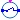
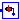

Models that can be used for the representation of events in a power system such as three-phase faults
Extends from Modelica.Icons.Package (Icon for standard packages).
| Name | Description |
|---|---|
|  Breaker | Circuit breaker with time or signal control |
|  PwFault | Transitory short-circuit on a node. Shunt impedance connected only during a specified interval of time. Developed by AIA. 2014/12/16 |
| PwFaultPQ | Transitory short-circuit on a node with active and reactive power information |
Circuit breaker with time or signal control
This is an opening circuit breaker which can either be parametrised with an opening and closing time or controlled via an external trigger. If the external trigger is active (i.e., Trigger=true)> then the circuit breaker is open.
| Name | Description |
|---|---|
| enableTrigger | =true, if external trigger signal is used |
| t_o | Opening time [s] |
| rc_enabled | Enable reclosure |
| t_rc | Reclosing time [s] |
| Name | Description |
|---|---|
| s | Sending pin |
| r | Receiving pin |
| Trigger |
Transitory short-circuit on a node. Shunt impedance connected only during a specified interval of time. Developed by AIA. 2014/12/16
| Name | Description |
|---|---|
| R | Resistance [1] |
| X | Reactance [1] |
| t1 | Start time of the fault [s] |
| t2 | End time of the fault [s] |
| Name | Description |
|---|---|
| p |
Transitory short-circuit on a node with active and reactive power information
| Name | Description |
|---|---|
| R | Resistance [1] |
| X | Reactance [1] |
| t1 | Start time of the fault [s] |
| t2 | End time of the fault [s] |
| Name | Description |
|---|---|
| p |